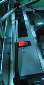

Illustration 1: Switch Power Strip

| NOTE: | Switching off the power strip will result in all the devices connected to the strip losing power! If the ICNs are connected to the same power strip and you want to power off the power strip, follow the ICN ON/OFF procedure. |